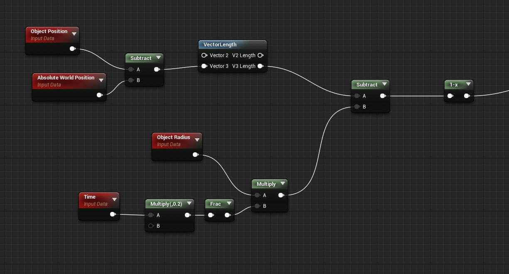
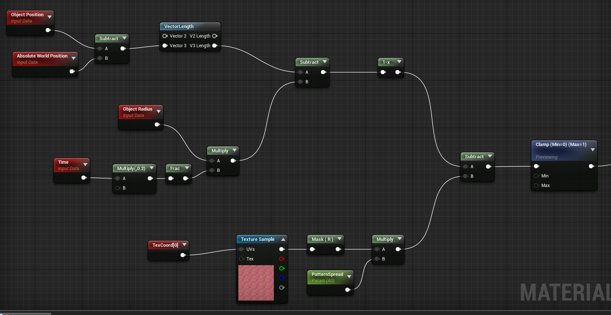
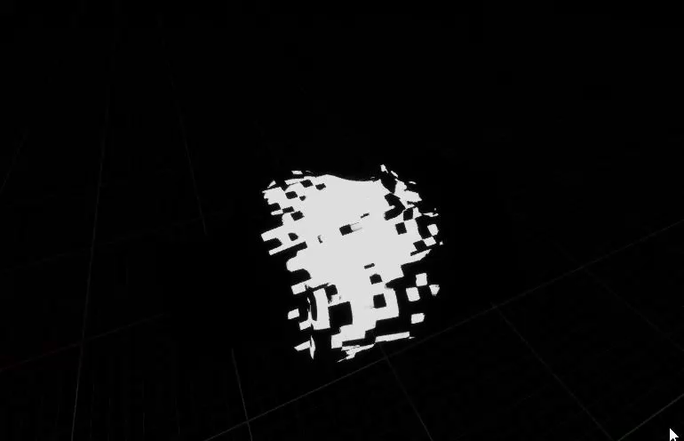
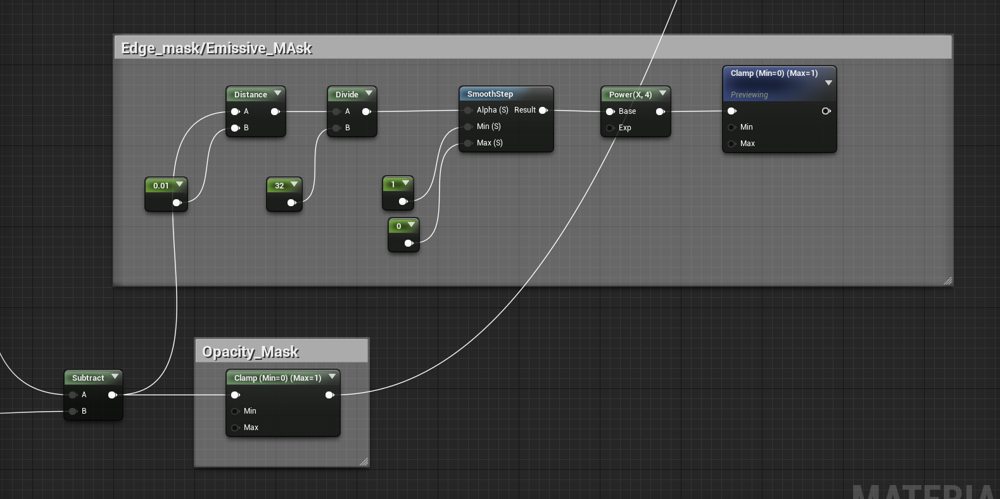
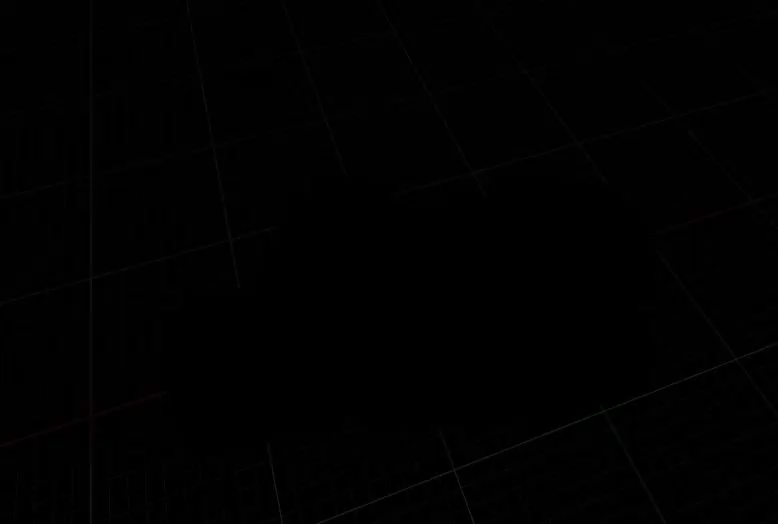
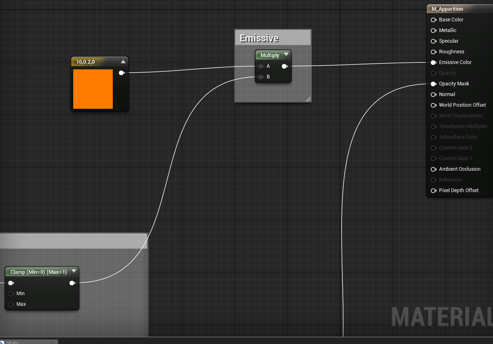

UE4 Apparition Material
源地址：https://deepspacebanana.github.io/deepspacebanana.github.io/

Introduction
This was a simple apparition material I came up with when I was messing around with Inigo Quillez’s distance field functions. This shader uses a scaling Distance Field Sphere as a mask transition the opacity, then we use some vdb textures to make the transition look interesting.
The Sphere Mask
This part is basically the same as what I did in my Post-Process Scan Effect Article with only one difference, please refer to that post for an explanation of how we set up the animated distance field,

As you can see the only big difference is that here we use the objects position instead of a Vector3 Paramter, technically you can add or subtract values from the object position to position the Distance Field Sphere as you like.
If you plug in the result from this network to the material’s Opacity Mask input, you will see something like this

As you can see the Distance Field Sphere creates a spherical Apparition shape forthe mesh, you can technicaly use any kind of Distance Field Function you want, so any kind of shape is possible, the sphere is the simples and cheapest i nterms of instruction count
In the next step we are going to use some pattern textures to make the effect look more interesting, and then finally we will combine it with some emissives for the finishing touch
Pattern Texture
I am using a Texture with three different greyscale patterns packed into each channel to drive the effect, here is what my setup looks like:
Binary_Generator.tga

Now we will combine the gresycale information from the Pattern to modify the mask as shown below:

As you can see we subtract the Red channel of the pattern texture from the result of the Distance Field Function to create the value difference at the edges that brings in the pattern, into the mask function. We also multiply the red channel by a scalar Parameter MaskSpread(note:As you increase the spread value, you will also need to increase the radius of the DF Sphere to compensate for the spread so that the entire mesh is covered in the transition, i.8 mutliple the objectradius by a higher value.), which controls the spread of teh noise values from the edges, if we increase this value, you will get more noise spread
If we preview the clamp node, we will get a preview of what the mask looks like now:

Edge Masking for Emissive
In this section we will create and edge mask, so that the edges of the transition can be highlighted with an emissive color, this setup is also borrowed from my Post-Process Scan Effect Article so read about it there for a full explanation.

What I have done here is basically take the Mask Field (Result of the Subtract node) and run it through an Edge Mask Function,This basically masks the edges of the Distance Field Sphere ,this gives us the result shown below wich we will sue to lerp with an emissive value for the edges

Final Touches
Now we just plug in the emissive mask and Opacity Mask to their respective inputs
All we have to do now is multiply the emissive mask with an Emissive Color Value and plug that output into the Emissive input of the material, and plug our Opacity Mask output to the opacity input of the material, and Voila we are done!


You can of course, swap out the patterns used to get different effects as well as tweak teh different parameters in the shader to get variations, here’s a couple I made with just adjusting values and changing patterns.


I hope you found this articel useful! Cheers!
关于本文
本文作者 Master Gong Sheng, 许可由 CC BY-NC 4.0.